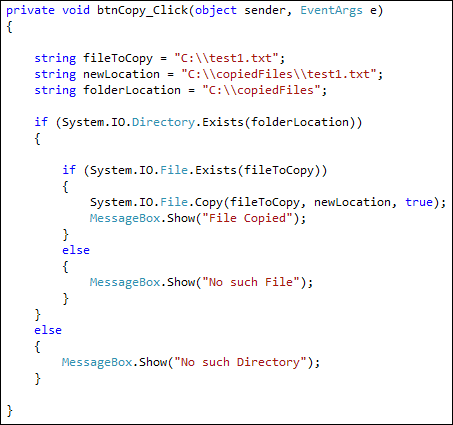

How to Copy a File in C# .NET
You can copy a file quite easily. It's done with the File class of System.IO. Let's see how. First create a new folder on your C drive. Give it the name copiedFiles.
Add a new button to your form. Double click to get at the code, and set up the following files and directory paths:
string fileToCopy = "C:\\test1.txt";
string newLocation = "C:\\copiedFiles\\test1.txt";
string folderLocation = "C:\\copiedFiles";
In Windowscversions later than XP, you may have to change the file paths to your Documents folder:
string fileToCopy = "C:\\Users\\Owner\\Documents\\test1.txt"
string newLocation = "C:\\Users\\Owner\\Documents\\copiedFiles\\test1.txt";
string folderLocation = "C:\\Users\\Owner\\Documents\\copiedFiles;
So the file we want to copy is test1.txt and it is in the root folder of the C drive. We want to copy it to a new location. The folder (Directory) we want to copy it to is called copiedFiles. We added a Folder Location, because we want to check if this Directory exists.
To copy a file, you use the Copy method of the File class:
System.IO.File.Copy( fileToCopy, newLocation );
In between the round brackets of Copy, you need a file to copy and the new location of the file you're trying to copy.
When the error checking is done as well, our code looks like this:

The code checks to see if the Directory exists. If it does, then we check to see if the file exist. If all is OK, then we go ahead and copy the file.
Add the code to your own and try it out. When you click your button, you should
see the "File Copied" message box appear. If you look in the copiedFiles
folder that you created, you should see the test1.txt file there.
Move a File
To move a file to a new location, you would use the Move method of the File class:
System.IO.File.Move( fileToMove, fileLocation );
Everything else is the same: type a file to move between the round brackets of the Move method. Then, after a comma, add the new location.
Don't forget to add your error checking as well!
Delete a File
To delete a file from your computer, you can use the Delete method of the File class:
System.IO.File.Delete( file_path );
In between the round brackets of Delete, you need the name and path of the file you are trying to get rid of. Be very careful when trying this one out because it really does delete it. You won't find the file in the Recycle bin.
Conclusion
File manipulation is a very useful skill for you to master as a programmer. There's an awful lot more to it than in this book, obviously. But we've given you more than enough power to be getting on with!
In the next section, we'll take a look at databases and C#. The first thing
you'll learn how to do is to create a database with SQL Server Express.